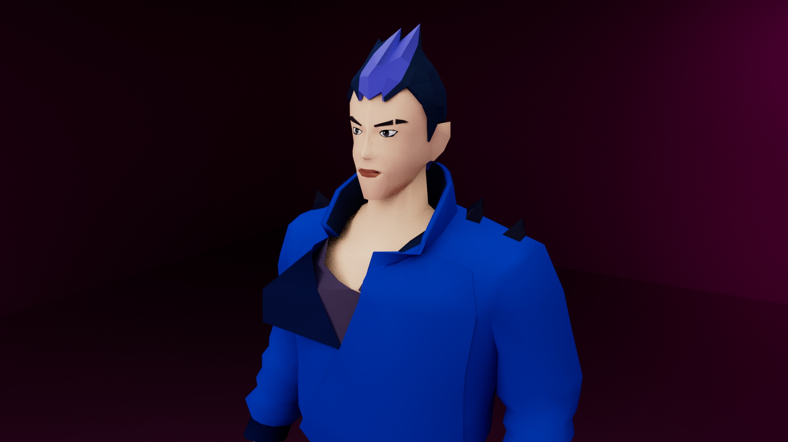

Autodesk Maya
For my DSGN 235 Character Project, I modeled the Yoru agent from the Riot game, Valorant. For the character project, we focused a lot on the human anatomy and how to model it accurately. In addition, we learned a lot of new techniques to help create clothes and hair for the character.